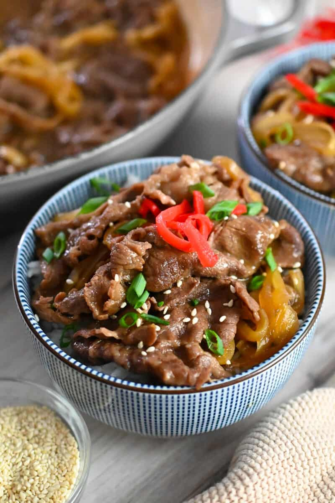

Gyudon 牛丼
Simmered beef is served on top of steamed rice. It's one of the most popular rice bowl dishes (donburi) in Japan. Top with benishoga (pickled red ginger) if desired.

Ingredients
- 4 cups Japanese sushi-style rice
- 1 ⅓ cups dashi soup
- 5 tablespoons soy sauce
- 3 tablespoons mirin
- 2 tablespoons white sugar
- 1 teaspoon sake
- 1 onion, thinly sliced
- 1 pound thinly sliced beef sirloin, cut into 2-inch pieces
Steps
- Bring water and rice to a boil in a saucepan. Reduce heat to medium-low, cover, and simmer until rice is tender and liquid has been absorbed, 20 to 25 minutes.
- Combine dashi, soy sauce, mirin, sugar, and sake in a large saucepan over medium heat. Bring to a boil. Add onion; simmer until softened, 6 to 8 minutes. Add beef; simmer until no longer pink, about 6 minutes more.
- Divide hot rice equally between individual deep rice bowls. Top with the simmered beef mixture.